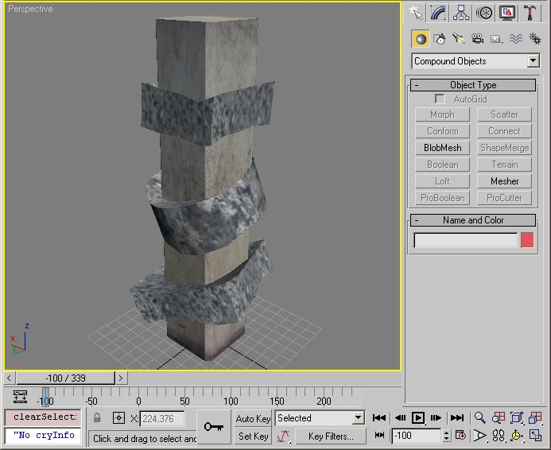
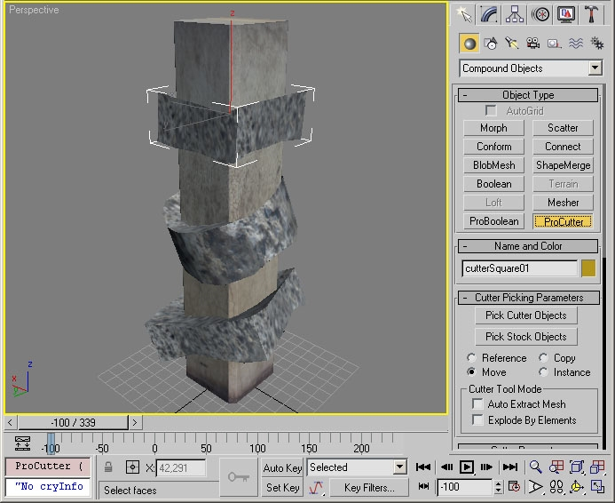
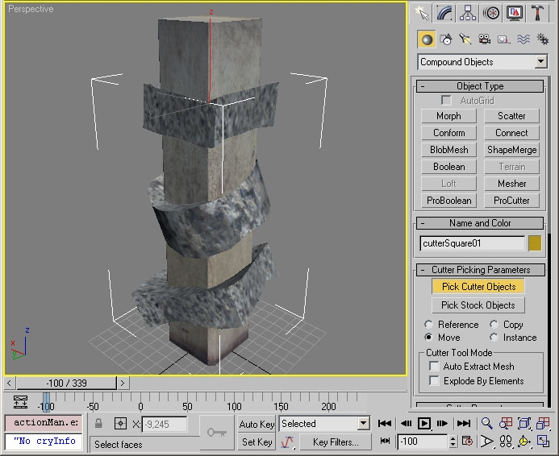
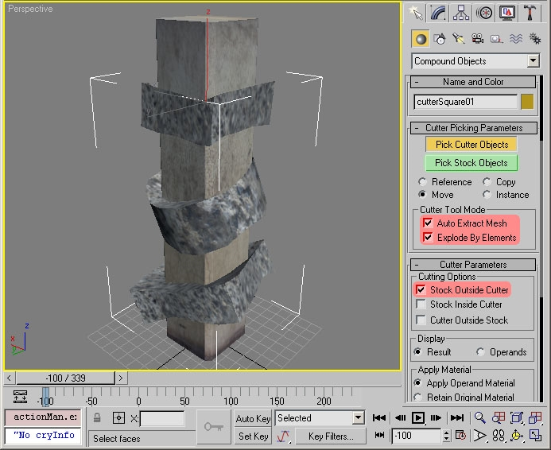
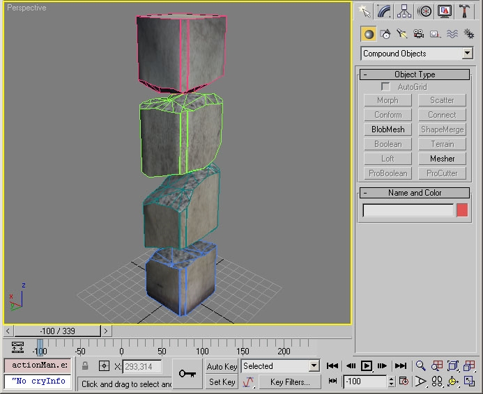
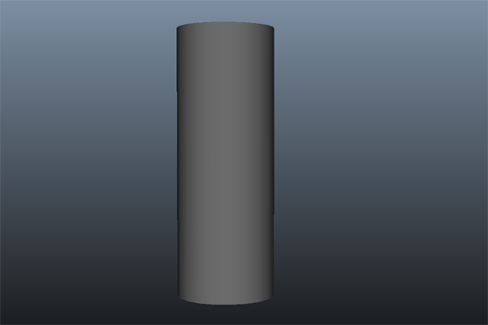
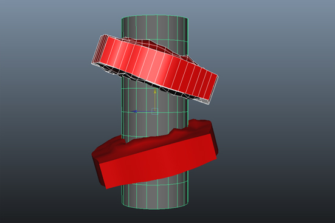
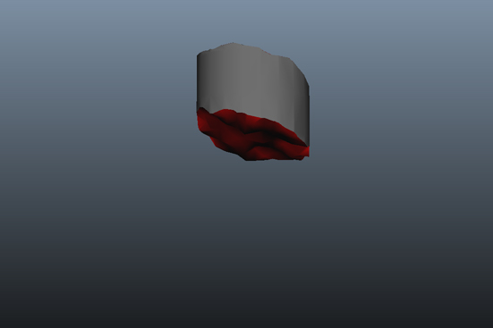
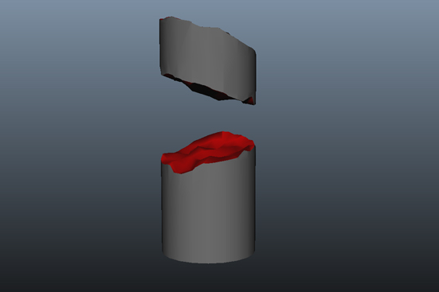

Overview
Fractionalizing is a technique used to prepare breakable assets.
Fractionalizing Objects in 3ds Max
3ds Max ships with the ProCutter plugin, which is very useful for creating debris pieces from an object. After completing this tutorial, users will be able to use the ProCutter plugin to create debris pieces.
1. First, load the object that you want to fractionalize in 3ds Max.
2. Create a few cutter objects. Avoid objects that have no volume because these can cause a lot of mesh garbage. Make sure that the cutter objects have proper UV coordinates and material IDs. These will be used in the debris pieces. (You can use the attached procutter_example.zip.)

3. Select the first cutter object and turn it into a ProCutter object.

4. Click Pick Cutter Objects and select the remaining cutter objects.

5. Select the Auto Extract Mesh, Explode By Elements, and Stock Outside Cutter check boxes (red) and click Pick Stock Objects (green).

6. Remove the cutter object. You should have one new object per debris piece now. ProCutter will automatically copy the UV coordinates and material IDs from the cutter objects to the new faces in the debris pieces.

Fractionalizing Objects in Maya
Maya does not have an exact tool to Pro Cutter but there are various ways to achieve a similar effect. For this tutorial we will discuss Boolean operations.
1. First, load the object that you want to fractionalize in Maya. 
2. Create a few objects you wish to use as the "cookie cutter". Make sure that the cutter objects have proper UV coordinates and material IDs. These will be used in the debris pieces. 
3. Select the first cutter object and then select your main mesh. 
4. Next go to mesh, Booleans, then you have a few choices but in most cases you will just use intersection. You will likely need to duplicate this asset multiple times for each new piece you want to have. 
5. You should now have your desired pieces cut out . The Boolean operation will automatically copy the UV coordinates and material IDs from the cutter objects to the new faces in the debris pieces. Notice that the "cookie cutter" mesh is actually keeping everything which encompasses its interior.
Also note that this should not be the final product, major clean up may be required depending on how your two assets are setup.